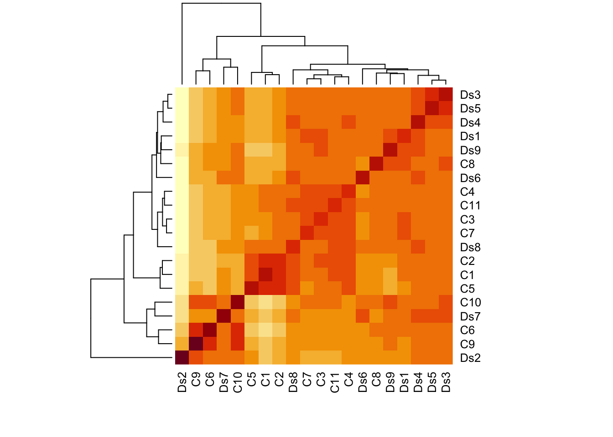
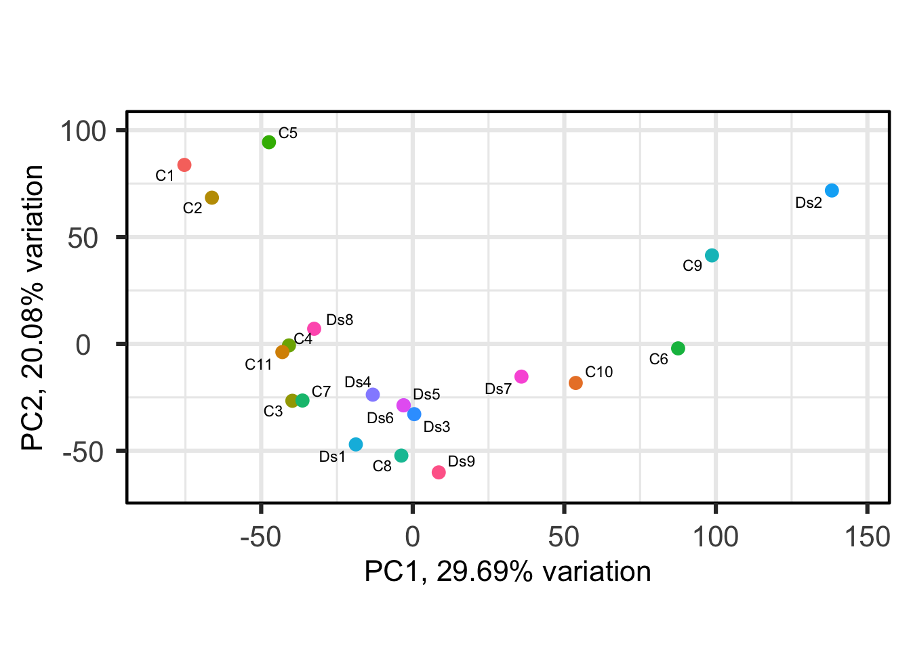
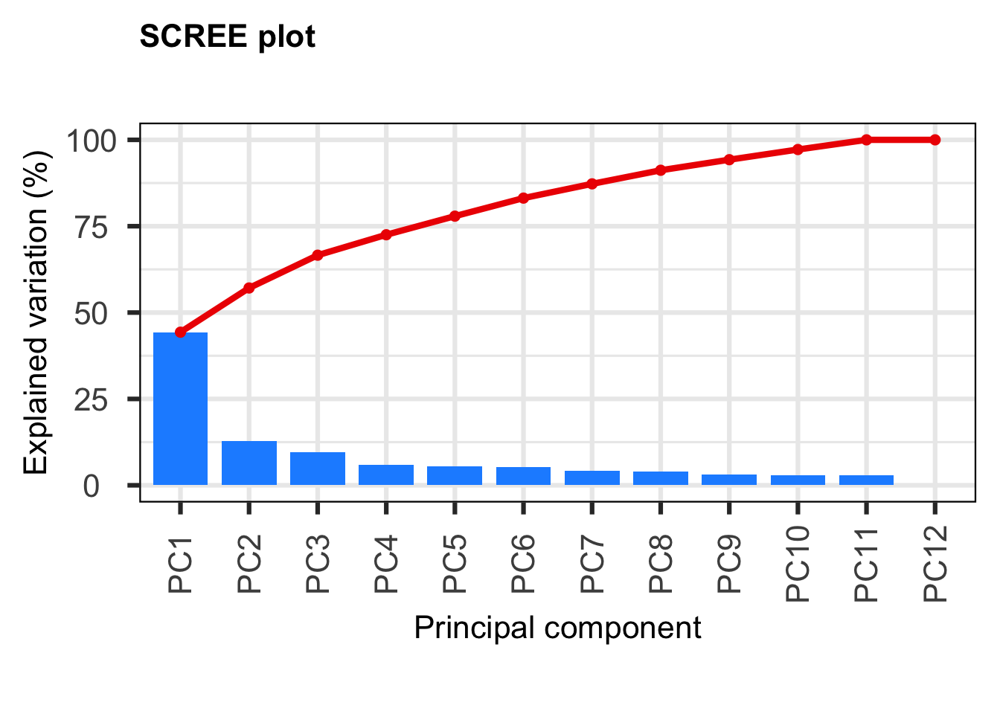
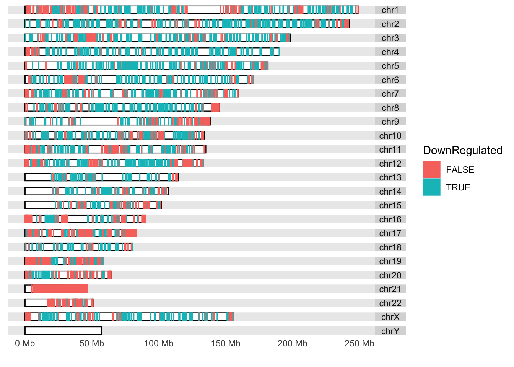

differential_expression_analysis
neurodevdisorder
2022-07-15
Last updated: 2022-07-15
Checks: 7 0
Knit directory: HumanMultiomics/
This reproducible R Markdown analysis was created with workflowr (version 1.7.0). The Checks tab describes the reproducibility checks that were applied when the results were created. The Past versions tab lists the development history.
Great! Since the R Markdown file has been committed to the Git repository, you know the exact version of the code that produced these results.
Great job! The global environment was empty. Objects defined in the global environment can affect the analysis in your R Markdown file in unknown ways. For reproduciblity it’s best to always run the code in an empty environment.
The command set.seed(20220715) was run prior to running the code in the R Markdown file. Setting a seed ensures that any results that rely on randomness, e.g. subsampling or permutations, are reproducible.
Great job! Recording the operating system, R version, and package versions is critical for reproducibility.
Nice! There were no cached chunks for this analysis, so you can be confident that you successfully produced the results during this run.
Great job! Using relative paths to the files within your workflowr project makes it easier to run your code on other machines.
Great! You are using Git for version control. Tracking code development and connecting the code version to the results is critical for reproducibility.
The results in this page were generated with repository version 9bf2d51. See the Past versions tab to see a history of the changes made to the R Markdown and HTML files.
Note that you need to be careful to ensure that all relevant files for the analysis have been committed to Git prior to generating the results (you can use wflow_publish or wflow_git_commit). workflowr only checks the R Markdown file, but you know if there are other scripts or data files that it depends on. Below is the status of the Git repository when the results were generated:
Ignored files:
Ignored: .DS_Store
Ignored: analysis/.DS_Store
Untracked files:
Untracked: HumanMultiomics.R
Untracked: data/human_hippo_samplesheet.xlsx
Untracked: data/raw_counts_human_hippo_matrix_coding.txt
Untracked: figure/
Untracked: topHitshuman_hippo.bed
Note that any generated files, e.g. HTML, png, CSS, etc., are not included in this status report because it is ok for generated content to have uncommitted changes.
These are the previous versions of the repository in which changes were made to the R Markdown (analysis/differential_expression_analysis.Rmd) and HTML (docs/differential_expression_analysis.html) files. If you’ve configured a remote Git repository (see ?wflow_git_remote), click on the hyperlinks in the table below to view the files as they were in that past version.
| File | Version | Author | Date | Message |
|---|---|---|---|---|
| Rmd | 9bf2d51 | neurodevdisorder | 2022-07-15 | Differential expression analysis |
| html | 80ecc5e | neurodevdisorder | 2022-07-15 | Build site. |
| Rmd | d1cf5b7 | neurodevdisorder | 2022-07-15 | Differential expression analysis |
| html | fc2eaa2 | neurodevdisorder | 2022-07-15 | Build site. |
| Rmd | ea2d35b | neurodevdisorder | 2022-07-15 | Differential expression analysis |
| html | 09605c0 | neurodevdisorder | 2022-07-15 | Build site. |
| html | fb514a1 | neurodevdisorder | 2022-07-15 | Build site. |
| html | 7d8790a | neurodevdisorder | 2022-07-15 | Build site. |
| html | e1c294a | neurodevdisorder | 2022-07-15 | Build site. |
| html | ac97638 | neurodevdisorder | 2022-07-15 | Build site. |
| Rmd | e1a04c1 | neurodevdisorder | 2022-07-15 | Differential expression analysis |
| html | e6b258c | neurodevdisorder | 2022-07-15 | Build site. |
| Rmd | 155f31d | neurodevdisorder | 2022-07-15 | Differential expression analysis |
Introduction
This is the differential expression analysis from the total RNA sequencing experiment performed on postmortem hippocampus and cortex obtained from Down syndrome and control individuals.
Read the raw count matrix for hippocampus samples
C1 C2 C3 C4 C5 C6 C7 C8 C9 C10 C11 Ds1 Ds2 Ds3
ENSG00000186092 0 0 0 0 0 0 0 0 0 0 0 0 0 0
ENSG00000284733 0 0 0 0 0 0 0 0 0 0 0 0 0 0
ENSG00000284662 0 0 0 0 0 0 0 0 0 0 0 0 0 0
ENSG00000187634 9 9 36 40 8 11 12 69 6 28 12 26 40 29
ENSG00000188976 496 624 1482 1417 558 454 1085 1249 270 477 799 1313 351 629
ENSG00000187961 13 20 89 66 12 34 82 131 13 30 25 105 44 45
Ds4 Ds5 Ds6 Ds7 Ds8 Ds9
ENSG00000186092 0 0 0 0 0 0
ENSG00000284733 0 0 0 0 0 0
ENSG00000284662 0 0 0 0 0 0
ENSG00000187634 46 47 21 41 26 22
ENSG00000188976 1051 798 755 570 887 1260
ENSG00000187961 95 98 82 47 32 100 [1] Cont Cont Cont Cont Cont Cont Cont Cont Cont Cont Cont DS DS DS DS
[16] DS DS DS DS DS
Levels: Cont DSVisualize the log counts per million (cpm) as a heatmap

Perform PCA
[1] TRUE-- removing the lower 10% of variables based on variance
Filter the data based on heatmap, PCA and RIN values
C1 C2 C3 C4 C5 C11 Ds1 Ds3 Ds4 Ds5 Ds8 Ds9
ENSG00000186092 0 0 0 0 0 0 0 0 0 0 0 0
ENSG00000284733 0 0 0 0 0 0 0 0 0 0 0 0
ENSG00000284662 0 0 0 0 0 0 0 0 0 0 0 0
ENSG00000187634 9 9 36 40 8 12 26 29 46 47 26 22
ENSG00000188976 496 624 1482 1417 558 799 1313 629 1051 798 887 1260
ENSG00000187961 13 20 89 66 12 25 105 45 95 98 32 100 [1] Cont Cont Cont Cont Cont Cont DS DS DS DS DS DS
Levels: Cont DS####Perform PCA on the filtered samples
[1] TRUE-- removing the lower 10% of variables based on variance
Filter the genes based on their expression in n-1 samples
keep_hth_filt_coding2
FALSE TRUE
5747 14221 Perform normalization using TMM
Estimate differential expression using GLM
group lib.size norm.factors
C1 Cont 26747264 0.9014953
C2 Cont 28753065 0.9295325
C3 Cont 31216269 1.0367848
C4 Cont 34181183 0.9965316
C5 Cont 24231673 0.9048995
C11 Cont 23897314 0.9656747
Ds1 DS 27072147 1.0308510
Ds3 DS 17654033 1.1121233
Ds4 DS 27713628 1.0497314
Ds5 DS 25307466 1.1031263
Ds8 DS 26297451 0.9796220
Ds9 DS 24491826 1.0163664Iteration 1: Re-fitting GLM. Re-estimating trended dispersion.
Re-estimating tagwise dispersion.
Iteration 2: Re-fitting GLM. Re-estimating trended dispersion.
Re-estimating tagwise dispersion.
Iteration 3: Re-fitting GLM. Re-estimating trended dispersion.
Re-estimating tagwise dispersion.
Iteration 4: Re-fitting GLM. Re-estimating trended dispersion.
Re-estimating tagwise dispersion.
Iteration 5: Re-fitting GLM. Re-estimating trended dispersion.
Re-estimating tagwise dispersion.
Iteration 6: Re-fitting GLM. Re-estimating trended dispersion.
Re-estimating tagwise dispersion.Number of differentially expressed genes in the hippocampus
group_hth_filt_coding2DS
Down 2205
NotSig 9394
Up 2622Here, we annotated the data from the previous differential expression analysis using ENSEMBL information for each gene and mapped the DEGs onto their chromosomal location.
[1] "ENSG00000188976" "ENSG00000187961" "ENSG00000188290" "ENSG00000187608"
[5] "ENSG00000188157" "ENSG00000131591"'select()' returned 1:many mapping between keys and columnsGRanges object with 4809 ranges and 12 metadata columns:
seqnames ranges strand | logFC logCPM
<Rle> <IRanges> <Rle> | <numeric> <numeric>
339451 chr1 960584-965719 + | 1.444466 1.13402
375790 chr1 1020120-1056118 + | 1.428524 4.58160
54991 chr1 1081818-1116361 - | 1.179575 2.41598
51150 chr1 1216909-1232067 - | 0.452477 5.35276
6339 chr1 1280436-1292029 + | 1.051756 2.24617
... ... ... ... . ... ...
54058 chr21 46300181-46323875 - | 1.744116 1.84115
5116 chr21 46324141-46445769 + | 0.772067 6.81541
23181 chr21 46458891-46570015 + | 0.921378 6.25343
3275 chr21 46635595-46665124 + | 0.485232 6.94981
389831 chrUn_GL000195v1 42939-49164 - | -1.191513 2.15811
LR PValue FDR ENSEMBL ENTREZID
<numeric> <numeric> <numeric> <character> <character>
339451 12.01408 5.28001e-04 0.003696271 ENSG00000187961 339451
375790 16.37063 5.20862e-05 0.000684321 ENSG00000188157 375790
54991 11.76935 6.02139e-04 0.004066014 ENSG00000131591 54991
51150 7.51441 6.12073e-03 0.023149708 ENSG00000078808 51150
6339 8.46603 3.61840e-03 0.015531915 ENSG00000162572 6339
... ... ... ... ... ...
54058 24.20717 8.65097e-07 3.45406e-05 ENSG00000160298 54058
5116 25.68207 4.02551e-07 1.96724e-05 ENSG00000160299 5116
23181 33.96882 5.60024e-09 7.80794e-07 ENSG00000160305 23181
3275 11.57174 6.69616e-04 4.42441e-03 ENSG00000160310 3275
389831 6.09842 1.35303e-02 4.21130e-02 ENSG00000276256 389831
SYMBOL GENENAME CHR UNIPROT ALIAS
<character> <character> <character> <character> <character>
339451 KLHL17 kelch like family me.. 1 Q6TDP4 AF
375790 AGRN agrin 1 O00468 AGRIN
54991 C1orf159 chromosome 1 open re.. 1 Q96HA4 C1orf159
51150 SDF4 stromal cell derived.. 1 A0A024R084 Cab45
6339 SCNN1D sodium channel epith.. 1 A6NNF7 ENaCd
... ... ... ... ... ...
54058 C21orf58 chromosome 21 open r.. 21 P58505 C21orf58
5116 PCNT pericentrin 21 O95613 KEN
23181 DIP2A disco interacting pr.. 21 Q14689 C21orf106
3275 PRMT2 protein arginine met.. 21 P55345 HRMT1L1
389831 LOC389831 uncharacterized LOC3.. 14 <NA> LOC389831
-------
seqinfo: 595 sequences (1 circular) from hg38 genomeGRanges object with 4809 ranges and 12 metadata columns:
seqnames ranges strand | logFC logCPM LR
<Rle> <IRanges> <Rle> | <numeric> <numeric> <numeric>
64005 chr7 44962662-44979088 - | 3.67879 0.606683 66.0467
7052 chr20 38127385-38166578 - | 2.25840 4.274056 65.9522
3339 chr1 21822244-21937310 - | 2.44714 3.740847 65.5580
12 chr14 94592058-94624646 + | 3.16526 0.988412 64.9642
3691 chr17 75721328-75757818 + | 2.18007 5.528861 64.2538
... ... ... ... . ... ... ...
10745 chr1 113696831-113759489 - | -0.361545 5.48447 5.71151
8495 chr11 7513298-7657127 + | 0.496606 4.93888 5.71125
54039 chr21 45643694-45942454 + | 0.639404 3.11438 5.70519
57592 chr1 151281618-151292176 + | 0.795094 3.55223 5.70267
8708 chr2 167293171-167558333 + | -0.444137 5.26416 5.70133
PValue FDR ENSEMBL ENTREZID SYMBOL
<numeric> <numeric> <character> <character> <character>
64005 4.40354e-16 2.67493e-12 ENSG00000136286 64005 MYO1G
7052 4.61983e-16 2.67493e-12 ENSG00000198959 7052 TGM2
3339 5.64291e-16 2.67493e-12 ENSG00000142798 3339 HSPG2
12 7.62729e-16 2.71169e-12 ENSG00000196136 12 SERPINA3
3691 1.09383e-15 3.11108e-12 ENSG00000132470 3691 ITGB4
... ... ... ... ... ...
10745 0.0168541 0.0496926 ENSG00000116793 10745 PHTF1
8495 0.0168566 0.0496926 ENSG00000166387 8495 PPFIBP2
54039 0.0169148 0.0498541 ENSG00000183570 54039 PCBP3
57592 0.0169391 0.0499154 ENSG00000143373 57592 ZNF687
8708 0.0169521 0.0499431 ENSG00000172318 8708 B3GALT1
GENENAME CHR UNIPROT ALIAS
<character> <character> <character> <character>
64005 myosin IG 7 B0I1T2 HA2
7052 transglutaminase 2 20 P21980 G(h)
3339 heparan sulfate prot.. 1 P98160 HSPG
12 serpin family A memb.. 14 A0A024R6P0 AACT
3691 integrin subunit bet.. 17 A0A024R8T0 CD104
... ... ... ... ...
10745 putative homeodomain.. 1 Q9UMS5 PHTF
8495 PPFIA binding protei.. 11 Q8ND30 Cclp1
54039 poly(rC) binding pro.. 21 P57721 ALPHA-CP3
57592 zinc finger protein .. 1 Q8N1G0 PDB6
8708 beta-1,3-galactosylt.. 2 Q9Y5Z6 beta3Gal-T1
-------
seqinfo: 595 sequences (1 circular) from hg38 genome [1] "chr1" "chr2"
[3] "chr3" "chr4"
[5] "chr5" "chr6"
[7] "chr7" "chr8"
[9] "chr9" "chr10"
[11] "chr11" "chr12"
[13] "chr13" "chr14"
[15] "chr15" "chr16"
[17] "chr17" "chr18"
[19] "chr19" "chr20"
[21] "chr21" "chr22"
[23] "chrX" "chrY"
[25] "chrM" "chr1_GL383518v1_alt"
[27] "chr1_GL383519v1_alt" "chr1_GL383520v2_alt"
[29] "chr1_KI270706v1_random" "chr1_KI270707v1_random"
[31] "chr1_KI270708v1_random" "chr1_KI270709v1_random"
[33] "chr1_KI270710v1_random" "chr1_KI270711v1_random"
[35] "chr1_KI270712v1_random" "chr1_KI270713v1_random"
[37] "chr1_KI270714v1_random" "chr1_KI270759v1_alt"
[39] "chr1_KI270760v1_alt" "chr1_KI270761v1_alt"
[41] "chr1_KI270762v1_alt" "chr1_KI270763v1_alt"
[43] "chr1_KI270764v1_alt" "chr1_KI270765v1_alt"
[45] "chr1_KI270766v1_alt" "chr1_KI270892v1_alt"
[47] "chr1_KN196472v1_fix" "chr1_KN196473v1_fix"
[49] "chr1_KN196474v1_fix" "chr1_KN538360v1_fix"
[51] "chr1_KN538361v1_fix" "chr1_KQ031383v1_fix"
[53] "chr1_KQ458382v1_alt" "chr1_KQ458383v1_alt"
[55] "chr1_KQ458384v1_alt" "chr1_KQ983255v1_alt"
[57] "chr1_KV880763v1_alt" "chr1_KZ208904v1_alt"
[59] "chr1_KZ208905v1_alt" "chr1_KZ208906v1_fix"
[61] "chr1_KZ559100v1_fix" "chr2_GL383521v1_alt"
[63] "chr2_GL383522v1_alt" "chr2_GL582966v2_alt"
[65] "chr2_KI270715v1_random" "chr2_KI270716v1_random"
[67] "chr2_KI270767v1_alt" "chr2_KI270768v1_alt"
[69] "chr2_KI270769v1_alt" "chr2_KI270770v1_alt"
[71] "chr2_KI270771v1_alt" "chr2_KI270772v1_alt"
[73] "chr2_KI270773v1_alt" "chr2_KI270774v1_alt"
[75] "chr2_KI270775v1_alt" "chr2_KI270776v1_alt"
[77] "chr2_KI270893v1_alt" "chr2_KI270894v1_alt"
[79] "chr2_KN538362v1_fix" "chr2_KN538363v1_fix"
[81] "chr2_KQ031384v1_fix" "chr2_KQ983256v1_alt"
[83] "chr2_KZ208907v1_alt" "chr2_KZ208908v1_alt"
[85] "chr3_GL000221v1_random" "chr3_GL383526v1_alt"
[87] "chr3_JH636055v2_alt" "chr3_KI270777v1_alt"
[89] "chr3_KI270778v1_alt" "chr3_KI270779v1_alt"
[91] "chr3_KI270780v1_alt" "chr3_KI270781v1_alt"
[93] "chr3_KI270782v1_alt" "chr3_KI270783v1_alt"
[95] "chr3_KI270784v1_alt" "chr3_KI270895v1_alt"
[97] "chr3_KI270924v1_alt" "chr3_KI270934v1_alt"
[99] "chr3_KI270935v1_alt" "chr3_KI270936v1_alt"
[101] "chr3_KI270937v1_alt" "chr3_KN196475v1_fix"
[103] "chr3_KN196476v1_fix" "chr3_KN538364v1_fix"
[105] "chr3_KQ031385v1_fix" "chr3_KQ031386v1_fix"
[107] "chr3_KV766192v1_fix" "chr3_KZ208909v1_alt"
[109] "chr3_KZ559101v1_alt" "chr3_KZ559102v1_alt"
[111] "chr3_KZ559103v1_alt" "chr3_KZ559104v1_fix"
[113] "chr3_KZ559105v1_alt" "chr4_GL000008v2_random"
[115] "chr4_GL000257v2_alt" "chr4_GL383527v1_alt"
[117] "chr4_GL383528v1_alt" "chr4_KI270785v1_alt"
[119] "chr4_KI270786v1_alt" "chr4_KI270787v1_alt"
[121] "chr4_KI270788v1_alt" "chr4_KI270789v1_alt"
[123] "chr4_KI270790v1_alt" "chr4_KI270896v1_alt"
[125] "chr4_KI270925v1_alt" "chr4_KQ090013v1_alt"
[127] "chr4_KQ090014v1_alt" "chr4_KQ090015v1_alt"
[129] "chr4_KQ983257v1_fix" "chr4_KQ983258v1_alt"
[131] "chr4_KV766193v1_alt" "chr5_GL000208v1_random"
[133] "chr5_GL339449v2_alt" "chr5_GL383530v1_alt"
[135] "chr5_GL383531v1_alt" "chr5_GL383532v1_alt"
[137] "chr5_GL949742v1_alt" "chr5_KI270791v1_alt"
[139] "chr5_KI270792v1_alt" "chr5_KI270793v1_alt"
[141] "chr5_KI270794v1_alt" "chr5_KI270795v1_alt"
[143] "chr5_KI270796v1_alt" "chr5_KI270897v1_alt"
[145] "chr5_KI270898v1_alt" "chr5_KN196477v1_alt"
[147] "chr5_KV575243v1_alt" "chr5_KV575244v1_fix"
[149] "chr5_KZ208910v1_alt" "chr6_GL000250v2_alt"
[151] "chr6_GL000251v2_alt" "chr6_GL000252v2_alt"
[153] "chr6_GL000253v2_alt" "chr6_GL000254v2_alt"
[155] "chr6_GL000255v2_alt" "chr6_GL000256v2_alt"
[157] "chr6_GL383533v1_alt" "chr6_KB021644v2_alt"
[159] "chr6_KI270758v1_alt" "chr6_KI270797v1_alt"
[161] "chr6_KI270798v1_alt" "chr6_KI270799v1_alt"
[163] "chr6_KI270800v1_alt" "chr6_KI270801v1_alt"
[165] "chr6_KI270802v1_alt" "chr6_KN196478v1_fix"
[167] "chr6_KQ031387v1_fix" "chr6_KQ090016v1_fix"
[169] "chr6_KQ090017v1_alt" "chr6_KV766194v1_fix"
[171] "chr6_KZ208911v1_fix" "chr7_GL383534v2_alt"
[173] "chr7_KI270803v1_alt" "chr7_KI270804v1_alt"
[175] "chr7_KI270805v1_alt" "chr7_KI270806v1_alt"
[177] "chr7_KI270807v1_alt" "chr7_KI270808v1_alt"
[179] "chr7_KI270809v1_alt" "chr7_KI270899v1_alt"
[181] "chr7_KQ031388v1_fix" "chr7_KV880764v1_fix"
[183] "chr7_KV880765v1_fix" "chr7_KZ208912v1_fix"
[185] "chr7_KZ208913v1_alt" "chr7_KZ559106v1_alt"
[187] "chr8_KI270810v1_alt" "chr8_KI270811v1_alt"
[189] "chr8_KI270812v1_alt" "chr8_KI270813v1_alt"
[191] "chr8_KI270814v1_alt" "chr8_KI270815v1_alt"
[193] "chr8_KI270816v1_alt" "chr8_KI270817v1_alt"
[195] "chr8_KI270818v1_alt" "chr8_KI270819v1_alt"
[197] "chr8_KI270820v1_alt" "chr8_KI270821v1_alt"
[199] "chr8_KI270822v1_alt" "chr8_KI270900v1_alt"
[201] "chr8_KI270901v1_alt" "chr8_KI270926v1_alt"
[203] "chr8_KV880766v1_fix" "chr8_KV880767v1_fix"
[205] "chr8_KZ208914v1_fix" "chr8_KZ208915v1_fix"
[207] "chr8_KZ559107v1_alt" "chr9_GL383539v1_alt"
[209] "chr9_GL383540v1_alt" "chr9_GL383541v1_alt"
[211] "chr9_GL383542v1_alt" "chr9_KI270717v1_random"
[213] "chr9_KI270718v1_random" "chr9_KI270719v1_random"
[215] "chr9_KI270720v1_random" "chr9_KI270823v1_alt"
[217] "chr9_KN196479v1_fix" "chr9_KQ090018v1_alt"
[219] "chr9_KQ090019v1_alt" "chr10_GL383545v1_alt"
[221] "chr10_GL383546v1_alt" "chr10_KI270824v1_alt"
[223] "chr10_KI270825v1_alt" "chr10_KN196480v1_fix"
[225] "chr10_KN538365v1_fix" "chr10_KN538366v1_fix"
[227] "chr10_KN538367v1_fix" "chr10_KQ090020v1_alt"
[229] "chr10_KQ090021v1_fix" "chr11_GL383547v1_alt"
[231] "chr11_JH159136v1_alt" "chr11_JH159137v1_alt"
[233] "chr11_KI270721v1_random" "chr11_KI270826v1_alt"
[235] "chr11_KI270827v1_alt" "chr11_KI270829v1_alt"
[237] "chr11_KI270830v1_alt" "chr11_KI270831v1_alt"
[239] "chr11_KI270832v1_alt" "chr11_KI270902v1_alt"
[241] "chr11_KI270903v1_alt" "chr11_KI270927v1_alt"
[243] "chr11_KN196481v1_fix" "chr11_KN538368v1_alt"
[245] "chr11_KQ090022v1_fix" "chr11_KQ759759v1_fix"
[247] "chr11_KV766195v1_fix" "chr11_KZ559108v1_fix"
[249] "chr11_KZ559109v1_fix" "chr11_KZ559110v1_alt"
[251] "chr11_KZ559111v1_alt" "chr12_GL383549v1_alt"
[253] "chr12_GL383550v2_alt" "chr12_GL383551v1_alt"
[255] "chr12_GL383552v1_alt" "chr12_GL383553v2_alt"
[257] "chr12_GL877875v1_alt" "chr12_GL877876v1_alt"
[259] "chr12_KI270833v1_alt" "chr12_KI270834v1_alt"
[261] "chr12_KI270835v1_alt" "chr12_KI270836v1_alt"
[263] "chr12_KI270837v1_alt" "chr12_KI270904v1_alt"
[265] "chr12_KN196482v1_fix" "chr12_KN538369v1_fix"
[267] "chr12_KN538370v1_fix" "chr12_KQ090023v1_alt"
[269] "chr12_KQ759760v1_fix" "chr12_KZ208916v1_fix"
[271] "chr12_KZ208917v1_fix" "chr12_KZ208918v1_alt"
[273] "chr12_KZ559112v1_alt" "chr13_KI270838v1_alt"
[275] "chr13_KI270839v1_alt" "chr13_KI270840v1_alt"
[277] "chr13_KI270841v1_alt" "chr13_KI270842v1_alt"
[279] "chr13_KI270843v1_alt" "chr13_KN196483v1_fix"
[281] "chr13_KN538371v1_fix" "chr13_KN538372v1_fix"
[283] "chr13_KN538373v1_fix" "chr13_KQ090024v1_alt"
[285] "chr13_KQ090025v1_alt" "chr14_GL000009v2_random"
[287] "chr14_GL000194v1_random" "chr14_GL000225v1_random"
[289] "chr14_KI270722v1_random" "chr14_KI270723v1_random"
[291] "chr14_KI270724v1_random" "chr14_KI270725v1_random"
[293] "chr14_KI270726v1_random" "chr14_KI270844v1_alt"
[295] "chr14_KI270845v1_alt" "chr14_KI270846v1_alt"
[297] "chr14_KI270847v1_alt" "chr14_KZ208919v1_alt"
[299] "chr14_KZ208920v1_fix" "chr15_GL383554v1_alt"
[301] "chr15_GL383555v2_alt" "chr15_KI270727v1_random"
[303] "chr15_KI270848v1_alt" "chr15_KI270849v1_alt"
[305] "chr15_KI270850v1_alt" "chr15_KI270851v1_alt"
[307] "chr15_KI270852v1_alt" "chr15_KI270905v1_alt"
[309] "chr15_KI270906v1_alt" "chr15_KN538374v1_fix"
[311] "chr15_KQ031389v1_alt" "chr16_GL383556v1_alt"
[313] "chr16_GL383557v1_alt" "chr16_KI270728v1_random"
[315] "chr16_KI270853v1_alt" "chr16_KI270854v1_alt"
[317] "chr16_KI270855v1_alt" "chr16_KI270856v1_alt"
[319] "chr16_KQ031390v1_alt" "chr16_KQ090026v1_alt"
[321] "chr16_KQ090027v1_alt" "chr16_KV880768v1_fix"
[323] "chr16_KZ208921v1_alt" "chr16_KZ559113v1_fix"
[325] "chr17_GL000205v2_random" "chr17_GL000258v2_alt"
[327] "chr17_GL383563v3_alt" "chr17_GL383564v2_alt"
[329] "chr17_GL383565v1_alt" "chr17_GL383566v1_alt"
[331] "chr17_JH159146v1_alt" "chr17_JH159147v1_alt"
[333] "chr17_JH159148v1_alt" "chr17_KI270729v1_random"
[335] "chr17_KI270730v1_random" "chr17_KI270857v1_alt"
[337] "chr17_KI270858v1_alt" "chr17_KI270859v1_alt"
[339] "chr17_KI270860v1_alt" "chr17_KI270861v1_alt"
[341] "chr17_KI270862v1_alt" "chr17_KI270907v1_alt"
[343] "chr17_KI270908v1_alt" "chr17_KI270909v1_alt"
[345] "chr17_KI270910v1_alt" "chr17_KV575245v1_fix"
[347] "chr17_KV766196v1_fix" "chr17_KV766197v1_alt"
[349] "chr17_KV766198v1_alt" "chr17_KZ559114v1_alt"
[351] "chr18_GL383567v1_alt" "chr18_GL383568v1_alt"
[353] "chr18_GL383569v1_alt" "chr18_GL383570v1_alt"
[355] "chr18_GL383571v1_alt" "chr18_GL383572v1_alt"
[357] "chr18_KI270863v1_alt" "chr18_KI270864v1_alt"
[359] "chr18_KI270911v1_alt" "chr18_KI270912v1_alt"
[361] "chr18_KQ090028v1_fix" "chr18_KQ458385v1_alt"
[363] "chr18_KZ208922v1_fix" "chr18_KZ559115v1_fix"
[365] "chr18_KZ559116v1_alt" "chr19_GL000209v2_alt"
[367] "chr19_GL383573v1_alt" "chr19_GL383574v1_alt"
[369] "chr19_GL383575v2_alt" "chr19_GL383576v1_alt"
[371] "chr19_GL949746v1_alt" "chr19_GL949747v2_alt"
[373] "chr19_GL949748v2_alt" "chr19_GL949749v2_alt"
[375] "chr19_GL949750v2_alt" "chr19_GL949751v2_alt"
[377] "chr19_GL949752v1_alt" "chr19_GL949753v2_alt"
[379] "chr19_KI270865v1_alt" "chr19_KI270866v1_alt"
[381] "chr19_KI270867v1_alt" "chr19_KI270868v1_alt"
[383] "chr19_KI270882v1_alt" "chr19_KI270883v1_alt"
[385] "chr19_KI270884v1_alt" "chr19_KI270885v1_alt"
[387] "chr19_KI270886v1_alt" "chr19_KI270887v1_alt"
[389] "chr19_KI270888v1_alt" "chr19_KI270889v1_alt"
[391] "chr19_KI270890v1_alt" "chr19_KI270891v1_alt"
[393] "chr19_KI270914v1_alt" "chr19_KI270915v1_alt"
[395] "chr19_KI270916v1_alt" "chr19_KI270917v1_alt"
[397] "chr19_KI270918v1_alt" "chr19_KI270919v1_alt"
[399] "chr19_KI270920v1_alt" "chr19_KI270921v1_alt"
[401] "chr19_KI270922v1_alt" "chr19_KI270923v1_alt"
[403] "chr19_KI270929v1_alt" "chr19_KI270930v1_alt"
[405] "chr19_KI270931v1_alt" "chr19_KI270932v1_alt"
[407] "chr19_KI270933v1_alt" "chr19_KI270938v1_alt"
[409] "chr19_KN196484v1_fix" "chr19_KQ458386v1_fix"
[411] "chr19_KV575246v1_alt" "chr19_KV575247v1_alt"
[413] "chr19_KV575248v1_alt" "chr19_KV575249v1_alt"
[415] "chr19_KV575250v1_alt" "chr19_KV575251v1_alt"
[417] "chr19_KV575252v1_alt" "chr19_KV575253v1_alt"
[419] "chr19_KV575254v1_alt" "chr19_KV575255v1_alt"
[421] "chr19_KV575256v1_alt" "chr19_KV575257v1_alt"
[423] "chr19_KV575258v1_alt" "chr19_KV575259v1_alt"
[425] "chr19_KV575260v1_alt" "chr20_GL383577v2_alt"
[427] "chr20_KI270869v1_alt" "chr20_KI270870v1_alt"
[429] "chr20_KI270871v1_alt" "chr21_GL383578v2_alt"
[431] "chr21_GL383579v2_alt" "chr21_GL383580v2_alt"
[433] "chr21_GL383581v2_alt" "chr21_KI270872v1_alt"
[435] "chr21_KI270873v1_alt" "chr21_KI270874v1_alt"
[437] "chr22_GL383582v2_alt" "chr22_GL383583v2_alt"
[439] "chr22_KB663609v1_alt" "chr22_KI270731v1_random"
[441] "chr22_KI270732v1_random" "chr22_KI270733v1_random"
[443] "chr22_KI270734v1_random" "chr22_KI270735v1_random"
[445] "chr22_KI270736v1_random" "chr22_KI270737v1_random"
[447] "chr22_KI270738v1_random" "chr22_KI270739v1_random"
[449] "chr22_KI270875v1_alt" "chr22_KI270876v1_alt"
[451] "chr22_KI270877v1_alt" "chr22_KI270878v1_alt"
[453] "chr22_KI270879v1_alt" "chr22_KI270928v1_alt"
[455] "chr22_KN196485v1_alt" "chr22_KN196486v1_alt"
[457] "chr22_KQ458387v1_alt" "chr22_KQ458388v1_alt"
[459] "chr22_KQ759761v1_alt" "chr22_KQ759762v1_fix"
[461] "chrX_KI270880v1_alt" "chrX_KI270881v1_alt"
[463] "chrX_KI270913v1_alt" "chrX_KV766199v1_alt"
[465] "chrY_KI270740v1_random" "chrY_KN196487v1_fix"
[467] "chrY_KZ208923v1_fix" "chrY_KZ208924v1_fix"
[469] "chrUn_GL000195v1" "chrUn_GL000213v1"
[471] "chrUn_GL000214v1" "chrUn_GL000216v2"
[473] "chrUn_GL000218v1" "chrUn_GL000219v1"
[475] "chrUn_GL000220v1" "chrUn_GL000224v1"
[477] "chrUn_GL000226v1" "chrUn_KI270302v1"
[479] "chrUn_KI270303v1" "chrUn_KI270304v1"
[481] "chrUn_KI270305v1" "chrUn_KI270310v1"
[483] "chrUn_KI270311v1" "chrUn_KI270312v1"
[485] "chrUn_KI270315v1" "chrUn_KI270316v1"
[487] "chrUn_KI270317v1" "chrUn_KI270320v1"
[489] "chrUn_KI270322v1" "chrUn_KI270329v1"
[491] "chrUn_KI270330v1" "chrUn_KI270333v1"
[493] "chrUn_KI270334v1" "chrUn_KI270335v1"
[495] "chrUn_KI270336v1" "chrUn_KI270337v1"
[497] "chrUn_KI270338v1" "chrUn_KI270340v1"
[499] "chrUn_KI270362v1" "chrUn_KI270363v1"
[501] "chrUn_KI270364v1" "chrUn_KI270366v1"
[503] "chrUn_KI270371v1" "chrUn_KI270372v1"
[505] "chrUn_KI270373v1" "chrUn_KI270374v1"
[507] "chrUn_KI270375v1" "chrUn_KI270376v1"
[509] "chrUn_KI270378v1" "chrUn_KI270379v1"
[511] "chrUn_KI270381v1" "chrUn_KI270382v1"
[513] "chrUn_KI270383v1" "chrUn_KI270384v1"
[515] "chrUn_KI270385v1" "chrUn_KI270386v1"
[517] "chrUn_KI270387v1" "chrUn_KI270388v1"
[519] "chrUn_KI270389v1" "chrUn_KI270390v1"
[521] "chrUn_KI270391v1" "chrUn_KI270392v1"
[523] "chrUn_KI270393v1" "chrUn_KI270394v1"
[525] "chrUn_KI270395v1" "chrUn_KI270396v1"
[527] "chrUn_KI270411v1" "chrUn_KI270412v1"
[529] "chrUn_KI270414v1" "chrUn_KI270417v1"
[531] "chrUn_KI270418v1" "chrUn_KI270419v1"
[533] "chrUn_KI270420v1" "chrUn_KI270422v1"
[535] "chrUn_KI270423v1" "chrUn_KI270424v1"
[537] "chrUn_KI270425v1" "chrUn_KI270429v1"
[539] "chrUn_KI270435v1" "chrUn_KI270438v1"
[541] "chrUn_KI270442v1" "chrUn_KI270448v1"
[543] "chrUn_KI270465v1" "chrUn_KI270466v1"
[545] "chrUn_KI270467v1" "chrUn_KI270468v1"
[547] "chrUn_KI270507v1" "chrUn_KI270508v1"
[549] "chrUn_KI270509v1" "chrUn_KI270510v1"
[551] "chrUn_KI270511v1" "chrUn_KI270512v1"
[553] "chrUn_KI270515v1" "chrUn_KI270516v1"
[555] "chrUn_KI270517v1" "chrUn_KI270518v1"
[557] "chrUn_KI270519v1" "chrUn_KI270521v1"
[559] "chrUn_KI270522v1" "chrUn_KI270528v1"
[561] "chrUn_KI270529v1" "chrUn_KI270530v1"
[563] "chrUn_KI270538v1" "chrUn_KI270539v1"
[565] "chrUn_KI270544v1" "chrUn_KI270548v1"
[567] "chrUn_KI270579v1" "chrUn_KI270580v1"
[569] "chrUn_KI270581v1" "chrUn_KI270582v1"
[571] "chrUn_KI270583v1" "chrUn_KI270584v1"
[573] "chrUn_KI270587v1" "chrUn_KI270588v1"
[575] "chrUn_KI270589v1" "chrUn_KI270590v1"
[577] "chrUn_KI270591v1" "chrUn_KI270593v1"
[579] "chrUn_KI270741v1" "chrUn_KI270742v1"
[581] "chrUn_KI270743v1" "chrUn_KI270744v1"
[583] "chrUn_KI270745v1" "chrUn_KI270746v1"
[585] "chrUn_KI270747v1" "chrUn_KI270748v1"
[587] "chrUn_KI270749v1" "chrUn_KI270750v1"
[589] "chrUn_KI270751v1" "chrUn_KI270752v1"
[591] "chrUn_KI270753v1" "chrUn_KI270754v1"
[593] "chrUn_KI270755v1" "chrUn_KI270756v1"
[595] "chrUn_KI270757v1" [1] "chr1" "chr2" "chr3" "chr4" "chr5" "chr6" "chr7" "chr8" "chr9"
[10] "chr10" "chr11" "chr12" "chr13" "chr14" "chr15" "chr16" "chr17" "chr18"
[19] "chr19" "chr20" "chr21" "chr22" "chrX" "chrY" GRanges object with 4808 ranges and 14 metadata columns:
seqnames ranges strand | logFC logCPM LR
<Rle> <IRanges> <Rle> | <numeric> <numeric> <numeric>
339451 chr1 960584-965719 + | 1.444466 1.13402 12.01408
375790 chr1 1020120-1056118 + | 1.428524 4.58160 16.37063
54991 chr1 1081818-1116361 - | 1.179575 2.41598 11.76935
51150 chr1 1216909-1232067 - | 0.452477 5.35276 7.51441
6339 chr1 1280436-1292029 + | 1.051756 2.24617 8.46603
... ... ... ... . ... ... ...
8888 chr21 46235133-46286297 - | 0.658232 6.40840 18.0945
54058 chr21 46300181-46323875 - | 1.744116 1.84115 24.2072
5116 chr21 46324141-46445769 + | 0.772067 6.81541 25.6821
23181 chr21 46458891-46570015 + | 0.921378 6.25343 33.9688
3275 chr21 46635595-46665124 + | 0.485232 6.94981 11.5717
PValue FDR ENSEMBL ENTREZID SYMBOL
<numeric> <numeric> <character> <character> <character>
339451 5.28001e-04 0.003696271 ENSG00000187961 339451 KLHL17
375790 5.20862e-05 0.000684321 ENSG00000188157 375790 AGRN
54991 6.02139e-04 0.004066014 ENSG00000131591 54991 C1orf159
51150 6.12073e-03 0.023149708 ENSG00000078808 51150 SDF4
6339 3.61840e-03 0.015531915 ENSG00000162572 6339 SCNN1D
... ... ... ... ... ...
8888 2.10209e-05 3.49228e-04 ENSG00000160294 8888 MCM3AP
54058 8.65097e-07 3.45406e-05 ENSG00000160298 54058 C21orf58
5116 4.02551e-07 1.96724e-05 ENSG00000160299 5116 PCNT
23181 5.60024e-09 7.80794e-07 ENSG00000160305 23181 DIP2A
3275 6.69616e-04 4.42441e-03 ENSG00000160310 3275 PRMT2
GENENAME CHR UNIPROT ALIAS score
<character> <character> <character> <character> <numeric>
339451 kelch like family me.. 1 Q6TDP4 AF 2.43224
375790 agrin 1 O00468 AGRIN 3.16474
54991 chromosome 1 open re.. 1 Q96HA4 C1orf159 2.39083
51150 stromal cell derived.. 1 A0A024R084 Cab45 1.63545
6339 sodium channel epith.. 1 A6NNF7 ENaCd 1.80877
... ... ... ... ... ...
8888 minichromosome maint.. 21 O60318 GANP 3.45689
54058 chromosome 21 open r.. 21 P58505 C21orf58 4.46167
5116 pericentrin 21 O95613 KEN 4.70614
23181 disco interacting pr.. 21 Q14689 C21orf106 6.10746
3275 protein arginine met.. 21 P55345 HRMT1L1 2.35414
itemRgb
<character>
339451 #AA0055
375790 #AA0055
54991 #8D0071
51150 #71008D
6339 #8D0071
... ...
8888 #8D0071
54058 #AA0055
5116 #8D0071
23181 #8D0071
3275 #71008D
-------
seqinfo: 24 sequences from hg38 genomeusing coord:genome to parse x scale
Scale for 'x' is already present. Adding another scale for 'x', which will
replace the existing scale.Scale for 'x' is already present. Adding another scale for 'x', which will
replace the existing scale.
sessionInfo()R version 4.1.0 (2021-05-18)
Platform: x86_64-apple-darwin17.0 (64-bit)
Running under: macOS Catalina 10.15.7
Matrix products: default
BLAS: /Library/Frameworks/R.framework/Versions/4.1/Resources/lib/libRblas.dylib
LAPACK: /Library/Frameworks/R.framework/Versions/4.1/Resources/lib/libRlapack.dylib
locale:
[1] en_US.UTF-8/en_US.UTF-8/en_US.UTF-8/C/en_US.UTF-8/en_US.UTF-8
attached base packages:
[1] grid stats4 stats graphics grDevices utils datasets
[8] methods base
other attached packages:
[1] circlize_0.4.14
[2] ComplexHeatmap_2.8.0
[3] pathview_1.32.0
[4] forcats_0.5.1
[5] stringr_1.4.0
[6] purrr_0.3.4
[7] readr_2.1.2
[8] tidyr_1.2.0
[9] tibble_3.1.6
[10] tidyverse_1.3.1
[11] karyoploteR_1.18.0
[12] regioneR_1.24.0
[13] ggridges_0.5.3
[14] enrichplot_1.12.3
[15] clusterProfiler_4.0.5
[16] ggbio_1.40.0
[17] rtracklayer_1.52.1
[18] TxDb.Hsapiens.UCSC.hg38.knownGene_3.13.0
[19] GenomicFeatures_1.44.2
[20] GenomicRanges_1.44.0
[21] GenomeInfoDb_1.28.4
[22] pcaExplorer_2.18.0
[23] org.Hs.eg.db_3.13.0
[24] AnnotationDbi_1.54.1
[25] IRanges_2.28.0
[26] S4Vectors_0.32.3
[27] Biobase_2.54.0
[28] BiocGenerics_0.40.0
[29] DBI_1.1.2
[30] ggrepel_0.9.1
[31] openxlsx_4.2.5
[32] edgeR_3.34.1
[33] limma_3.50.1
[34] dplyr_1.0.8
[35] ggplot2_3.3.5
[36] workflowr_1.7.0
loaded via a namespace (and not attached):
[1] rsvd_1.0.5 Hmisc_4.6-0
[3] ps_1.6.0 Rsamtools_2.8.0
[5] foreach_1.5.2 rprojroot_2.0.2
[7] crayon_1.5.0 MASS_7.3-55
[9] nlme_3.1-155 backports_1.4.1
[11] reprex_2.0.1 GOSemSim_2.18.1
[13] rlang_1.0.2 XVector_0.32.0
[15] readxl_1.3.1 irlba_2.3.5
[17] SparseM_1.81 callr_3.7.0
[19] filelock_1.0.2 GOstats_2.58.0
[21] BiocParallel_1.28.3 rjson_0.2.21
[23] bit64_4.0.5 glue_1.6.2
[25] pheatmap_1.0.12 rngtools_1.5.2
[27] parallel_4.1.0 processx_3.5.2
[29] shinyAce_0.4.1 shinydashboard_0.7.2
[31] DOSE_3.18.3 haven_2.4.3
[33] tidyselect_1.1.2 SummarizedExperiment_1.22.0
[35] XML_3.99-0.9 GenomicAlignments_1.28.0
[37] xtable_1.8-4 magrittr_2.0.2
[39] evaluate_0.15 cli_3.2.0
[41] zlibbioc_1.40.0 rstudioapi_0.13
[43] whisker_0.4 bslib_0.3.1
[45] rpart_4.1.16 fastmatch_1.1-3
[47] ensembldb_2.16.4 treeio_1.16.2
[49] shiny_1.7.1 BiocSingular_1.8.1
[51] xfun_0.30 clue_0.3-60
[53] cluster_2.1.2 tidygraph_1.2.0
[55] TSP_1.2-0 KEGGREST_1.32.0
[57] biovizBase_1.40.0 threejs_0.3.3
[59] ape_5.6-2 dendextend_1.15.2
[61] Biostrings_2.60.2 png_0.1-7
[63] reshape_0.8.8 withr_2.5.0
[65] shinyBS_0.61 bitops_1.0-7
[67] ggforce_0.3.3 RBGL_1.68.0
[69] plyr_1.8.6 cellranger_1.1.0
[71] GSEABase_1.54.0 AnnotationFilter_1.16.0
[73] dqrng_0.3.0 pillar_1.7.0
[75] GlobalOptions_0.1.2 cachem_1.0.6
[77] fs_1.5.2 GetoptLong_1.0.5
[79] DelayedMatrixStats_1.14.3 vctrs_0.3.8
[81] ellipsis_0.3.2 generics_0.1.2
[83] NMF_0.23.0 tools_4.1.0
[85] foreign_0.8-82 munsell_0.5.0
[87] tweenr_1.0.2 fgsea_1.18.0
[89] DelayedArray_0.18.0 fastmap_1.1.0
[91] compiler_4.1.0 httpuv_1.6.5
[93] pkgmaker_0.32.2 plotly_4.10.0
[95] GenomeInfoDbData_1.2.6 gridExtra_2.3
[97] lattice_0.20-45 AnnotationForge_1.34.1
[99] utf8_1.2.2 later_1.3.0
[101] BiocFileCache_2.0.0 jsonlite_1.8.0
[103] GGally_2.1.2 scales_1.1.1
[105] ScaledMatrix_1.0.0 graph_1.70.0
[107] sparseMatrixStats_1.4.2 tidytree_0.3.9
[109] genefilter_1.74.1 lazyeval_0.2.2
[111] promises_1.2.0.1 doParallel_1.0.17
[113] latticeExtra_0.6-29 checkmate_2.0.0
[115] rmarkdown_2.13 cowplot_1.1.1
[117] webshot_0.5.2 dichromat_2.0-0
[119] downloader_0.4 BSgenome_1.60.0
[121] igraph_1.2.11 survival_3.3-1
[123] yaml_2.3.5 htmltools_0.5.2
[125] memoise_2.0.1 VariantAnnotation_1.38.0
[127] BiocIO_1.2.0 locfit_1.5-9.5
[129] seriation_1.3.3 PCAtools_2.4.0
[131] graphlayouts_0.8.0 viridisLite_0.4.0
[133] digest_0.6.29 assertthat_0.2.1
[135] mime_0.12 rappdirs_0.3.3
[137] registry_0.5-1 RSQLite_2.2.10
[139] yulab.utils_0.0.4 data.table_1.14.2
[141] blob_1.2.2 labeling_0.4.2
[143] splines_4.1.0 Formula_1.2-4
[145] Cairo_1.5-15 OrganismDbi_1.34.0
[147] ProtGenerics_1.26.0 RCurl_1.98-1.6
[149] broom_0.7.12 hms_1.1.1
[151] modelr_0.1.8 colorspace_2.0-3
[153] base64enc_0.1-3 BiocManager_1.30.16
[155] shape_1.4.6 aplot_0.1.2
[157] nnet_7.3-17 sass_0.4.0
[159] Rcpp_1.0.8.3 fansi_1.0.2
[161] tzdb_0.2.0 R6_2.5.1
[163] lifecycle_1.0.1 zip_2.2.0
[165] curl_4.3.2 jquerylib_0.1.4
[167] DO.db_2.9 Matrix_1.4-0
[169] qvalue_2.24.0 RColorBrewer_1.1-2
[171] iterators_1.0.14 topGO_2.44.0
[173] htmlwidgets_1.5.4 bamsignals_1.24.0
[175] beachmat_2.8.1 polyclip_1.10-0
[177] biomaRt_2.48.3 crosstalk_1.2.0
[179] shadowtext_0.1.1 gridGraphics_0.5-1
[181] rvest_1.0.2 htmlTable_2.4.0
[183] patchwork_1.1.1 KEGGgraph_1.52.0
[185] codetools_0.2-18 matrixStats_0.61.0
[187] lubridate_1.8.0 GO.db_3.13.0
[189] getPass_0.2-2 prettyunits_1.1.1
[191] dbplyr_2.1.1 gridBase_0.4-7
[193] gtable_0.3.0 git2r_0.30.1
[195] highr_0.9 ggfun_0.0.5
[197] httr_1.4.2 stringi_1.7.6
[199] progress_1.2.2 reshape2_1.4.4
[201] farver_2.1.0 heatmaply_1.3.0
[203] annotate_1.70.0 viridis_0.6.2
[205] Rgraphviz_2.36.0 ggtree_3.0.4
[207] DT_0.21 xml2_1.3.3
[209] bezier_1.1.2 restfulr_0.0.13
[211] geneplotter_1.70.0 ggplotify_0.1.0
[213] Category_2.58.0 DESeq2_1.32.0
[215] bit_4.0.4 scatterpie_0.1.7
[217] jpeg_0.1-9 MatrixGenerics_1.4.3
[219] ggraph_2.0.5 pkgconfig_2.0.3
[221] knitr_1.37